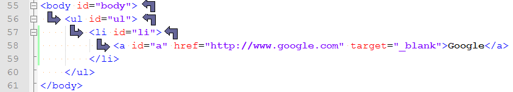

本著作係採用創用 CC 「姓名標示 2.5 台灣版」授權條款釋出。
Home
本著作係採用創用 CC 「姓名標示 2.5 台灣版」授權條款釋出。
Home
有人說「許多易怒的人都是自我認同有問題」，我想自己應該也很大的一部份是這樣吧，連自己的目標、價值都不清楚；另外一個很大的部分應該是自卑。 總是會想人類除了跟所有生物一樣延續物種的目標之外，應該還有其他的啥麼東西...今天晚上很怪...腦袋亂轉。
根據規定Event發生的phase可以分成capturing和bubbling。在FireFox, Safari都有按到規定實作，然而IE還是只有bubbling 的phase。
因為IE這個實作版的特性，下面都是用FireFox和Safari來看看event capturing和event bubbling。使用下面的HTML為例
<body id="body">
</body>
event被觸發之後都是由window.document開始發送，由下圖可以看到當使用者在連結上按滑鼠左鍵，這個click的event 由documnet開始送給body, ul, li, 最後送到a，這個過程稱為event capturing。而當event在a被處理之後，還會由和capturing 相反的方向發送，這個過程稱為event bubbling。(在Document和body之間應該還有一個html，詳見DOM level 3 Event spec.)
既然event的觸發有這些狀況當然API也會有相對應的設定方法(當然前提是實作版有實作的話)
var addEvent = function( elem, type, fn, isCapture ) {
var capture = isCapture || false;
if( window.addEventListener ) {
// 第三個參數 true: capturing; false: bubbling
elem.addEventListener( type, fn, capture );
} // if
else {
alert( 'This example is not for IE' );
} // else if
};
接下來就是針對event capturing和event bubbling綁上測試用的程式
window.onload = function() {
var b = document.getElementById( 'body' );
var u = document.getElementById( 'ul' );
var l = document.getElementById( 'li' );
var a = document.getElementById( 'a' );
var result = document.getElementById( 'result' );
addEvent( document, 'click', function() {
result.innerHTML += 'document click [capturing]
';
}, true);
addEvent( document, 'click', function() {
result.innerHTML += 'document click [bubbling]
';
}, false);
addEvent( b, 'click', function() {
result.innerHTML += 'body click [capturing]
';
}, true);
addEvent( b, 'click', function() {
result.innerHTML += 'body click [bubbling]
';
}, false);
addEvent( u, 'click', function() {
result.innerHTML += 'ul click [capturing]
';
}, true);
addEvent( u, 'click', function() {
result.innerHTML += 'ul click [bubbling]
';
}, false);
addEvent( l, 'click', function() {
result.innerHTML += 'li click [capturing]
';
}, true);
addEvent( l, 'click', function() {
result.innerHTML += 'li click [bubbling]
';
}, false);
addEvent( a, 'click', function() {
result.innerHTML += 'a click [capturing]
';
}, true);
addEvent( a, 'click', function() {
result.innerHTML += 'a click [bubbling]
';
}, false);
};
Run Example
Stop Propagation就是指event觸發所引發capturing和bubbling的過程，可以透過stop propagation來停止傳遞的過程。 default behavior是指某些event(如textfield輸入、按link...)會有預設的行為，這些行為並不能透過stop propagation停止。而prevent default behavior則是讓我們可以使browser停止預設行為。
拿之前的範例，在ul的event capturing handler加上e.stopPropagation()，會發現後續的capturing和bubbling的event handler都不會被呼叫到。
addEvent( u, 'click', function(e) {
result.innerHTML += 'ul click [capturing]
';
e.stopPropagation();
}, true);
由上面的例子可以看到即使使用stopPropagation()，link的預設行為還是會做，並不會被擋下來。 接下使用textfield的年齡輸入為例子，因為是年齡，所以客戶期待使用者輸入的時候前端可以阻擋輸入英文字和特殊符號。 (這個例子其實還是有問題，中文輸入法輸入的東西是會進去的)
<body>
Age:
</body>
var addEvent = function( elem, type, fn, isCapture ) {
var capture = isCapture || false;
if( window.addEventListener ) {
// 第三個參數 true: capturing; false: bubbling
elem.addEventListener( type, fn, capture );
} // if
else if( window.attachEvent ) {
elem.attachEvent( 'on' + type, fn );
} // else if
};
停止預設行為的方法在FireFox和IE是不一樣的，重點在下面程式碼Line 22~28定義的那個function。 在FireFox可以用preventDefault() function而在IE event沒有那個method要改用設定returnValue為false。
window.onload = function() {
var age = document.getElementById( 'age' );
addEvent( age, 'keypress', function( e ) {
var code = e.which || e.keyCode;
var preventDefault = function( evt ) {
if( evt.preventDefault ) {
evt.preventDefault();
} else {
evt.returnValue = false;
}
};
if( !/[0-9]/.test( String.fromCharCode( code ) ) && code !== 8 ) {
// 使用stopPropagation
// 阻擋Capturing & Bubbling但是卻無法阻擋default behavior
// e.stopPropagation();
preventDefault( e );
}
}, false );
};
Run Example